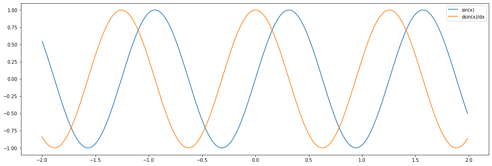
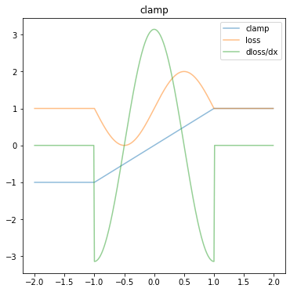
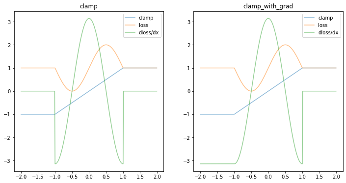
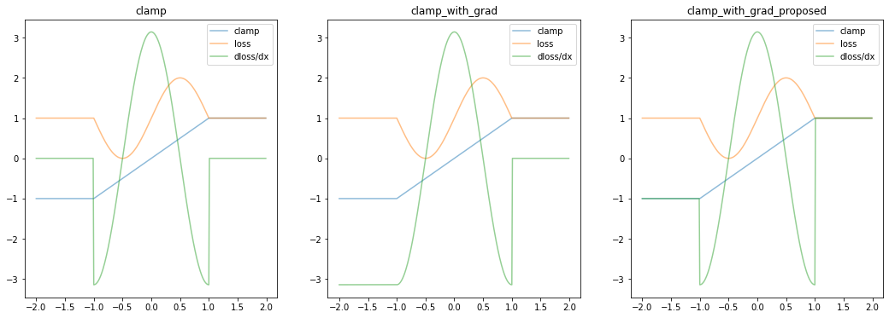

import torch
import matplotlib
import matplotlib.pyplot as plt
from math import pi
FIGSIZE = 6
matplotlib.rcParams['figure.figsize'] = (FIGSIZE * 3, FIGSIZE)This notebook examines the
clamp_with_grad()function that’s sometimes used in the CLIP-guided art community.
The standard clamp() (AKA clip()) function has a zero gradient outside the clamped region. This is a problem for gradient descent optimizers.
Various people have proposed a fix for this: adding a new function with a pseudo-gradient. I understood the general idea of this, but not the specified, so set out to build some intuition about how the backward pass is defined and why the function works.
What I discovered, however, was that this approach has a limitation: the gradient remains zero for negative values.
Fortunately it’s pretty easy to fix. I suggest an alternative definition which patches this, and demonstrate that we see improved behaviour.
Setup
Import the usual libraries and tweak the matplotlib setup
Plotting the derivative
To look at the derivative, we define a helper function to compute the gradient at a point.
def get_gradient(f, xs):
xs = xs.detach().clone()
xs.requires_grad = True
ys = f(xs)
ys.backward(torch.ones_like(ys))
return xs.grad.detach()
x = torch.arange(-2, 2, 0.01)
plt.plot(x, torch.sin(x * 5), label="sin(x)")
plt.plot(x, get_gradient(torch.sin, x * 5), label="dsin(x)/dx")
plt.legend()
plt.show()
The problem
The standard clamp functions has a zero gradient outside the clamped region. As a result gradient descent can’t do anything useful.
def plot(clamp_fn, ax, title):
x = torch.arange(-2, 2, 0.01)
clamp = lambda x: clamp_fn(x, -1, 1)
loss = lambda x: torch.sin(clamp(x) * pi) + 1
ax.plot(x, clamp(x), label="clamp", alpha=0.5)
ax.plot(x, loss(x), label="loss", alpha=0.5)
ax.plot(x, get_gradient(loss, x), label="dloss/dx", alpha=0.5)
ax.legend()
ax.title.set_text(title)
fig, ax = plt.subplots(ncols=1, figsize=(FIGSIZE,FIGSIZE))
plot(torch.clamp, ax, "clamp")
In this simple example, the minimum of the loss function (orange line) is at -0.5.
However outside the \([-1,1]\) interval, the derivative of the loss function (green line) is zero.
Define clamp_with_grad()
Various folks have proposed the following approach to addressing this, by providing a pseudo-derivative outside the clamped interval:
class ClampWithGrad(torch.autograd.Function):
@staticmethod
def forward(ctx, input, min, max):
ctx.min = min
ctx.max = max
ctx.save_for_backward(input)
return input.clamp(min, max)
@staticmethod
def backward(ctx, grad_in):
input, = ctx.saved_tensors
return (
grad_in * (grad_in * (input - input.clamp(ctx.min, ctx.max)) >= 0),
None,
None,
)
clamp_with_grad = ClampWithGrad.applyfig, ax = plt.subplots(ncols=2, figsize=(FIGSIZE*2, FIGSIZE))
plot(torch.clamp, ax[0], "clamp")
plot(clamp_with_grad, ax[1], "clamp_with_grad")
An improved function
class ClampWithGradProposed(torch.autograd.Function):
@staticmethod
def forward(ctx, input, min, max):
ctx.min = min
ctx.max = max
ctx.save_for_backward(input)
return input.clamp(min, max)
@staticmethod
def backward(ctx, grad_in):
input, = ctx.saved_tensors
clamped = input.clamp(ctx.min, ctx.max)
delta = input - clamped
v = torch.where(delta == 0, grad_in, torch.sign(delta))
return (v, None, None)
clamp_with_grad2 = ClampWithGrad2.applyfig, ax = plt.subplots(ncols=3)
plot(torch.clamp, ax[0], "clamp")
plot(clamp_with_grad, ax[1], "clamp_with_grad")
plot(clamp_with_grad2, ax[2], "clamp_with_grad_proposed")